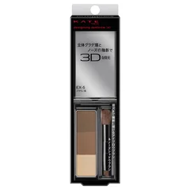

眉の形から作りたい人

ケイト
デザイニングアイブロウ3D EX-5
パウダー3色・ブラウン系・ブラシ付き
¥1210税込・出典掲載価格
書き込みの声
- 選ぶ条件：眉の形が自分の中で決まっていない人。面から作りたい人
- 10年以上買い続けている、パッケージは変わっても中身の位置は同じ、という声が続いていました
- 3色のうち1色は鼻の横の影にも使えるので、ポーチの中で1つぶん減るという声
気になる声気になる点：最後は割れて粉々になるという声。ブラシで真ん中ばかり取らず、端から順に取ると平らに減ります
販売価格・容量・送料はリンク先でご確認ください